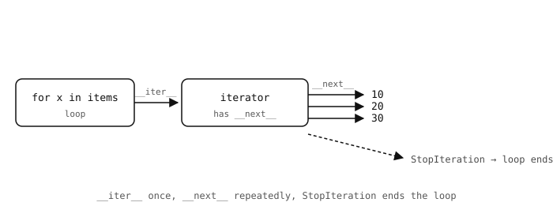

2.31. Itérateurs et générateurs¶
La boucle for accomplit plus de travail qu’il n’y paraît. Cette page présente le protocole d’itération sur lequel elle repose, ainsi que le mot-clé yield qui vous permet de construire vos propres itérateurs.
2.31.1. Le protocole d’itération¶
Tout objet qui peut être parcouru en boucle implémente deux méthodes :
__iter__()– renvoie un itérateur sur les éléments de l’objet.__next__()– sur l’itérateur, renvoie l’élément suivant ou lèveStopIterationlorsqu’il n’y en a plus.
La fonction native iter() appelle __iter__ ; next() appelle __next__. Parcourez une liste à la main :
it = iter([10, 20, 30])
print(next(it)) # 10
print(next(it)) # 20
print(next(it)) # 30
print(next(it)) # raises StopIteration

for est du sucre syntaxique pour « appeler __iter__ une fois, puis boucler sur __next__ jusqu’à StopIteration ».¶
Ce que for x in items: fait réellement :
_it = iter(items)
while True:
try:
x = next(_it)
except StopIteration:
break
# ... loop body ...
Chaque liste, tuple, chaîne, dict, set, objet fichier et générateur implémente déjà __iter__ et __next__ – c’est pourquoi ils fonctionnent tous avec for.
2.31.2. yield et les fonctions génératrices¶
Une fonction qui contient une instruction yield est une fonction génératrice. L’appeler n’exécute pas le corps ; cela renvoie un objet générateur (un itérateur) qui exécute le corps un yield à la fois :
def count_up_to(n):
i = 0
while i < n:
yield i
i += 1
for value in count_up_to(3):
print(value)
Sortie
0
1
2
Chaque appel à next() reprend la fonction jusqu’au prochain yield, transmet cette valeur à l’appelant et s’y met en pause. L’état local (i dans ce cas) est préservé entre les reprises.

next() exécute le corps jusqu’au prochain yield, rend la valeur et se met en pause. L’état local survit à la pause.¶
Les générateurs sont le moyen le plus simple de produire une séquence de manière paresseuse – aucune liste n’est construite, les éléments ne sont calculés que lorsque le consommateur les demande, et la fonction peut céder des éléments indéfiniment si elle le souhaite.
2.31.3. Pipelines paresseux¶
Les générateurs se composent bien. La sortie d’un générateur peut en alimenter un autre :
def numbers():
i = 0
while True:
yield i
i += 1
def squares(source):
for x in source:
yield x * x
pipeline = squares(numbers())
for v in pipeline:
if v > 100:
break
print(v)
Les valeurs circulent dans le pipeline une à la fois – pas de liste intermédiaire, pas de limite supérieure intégrée à numbers, et le consommateur (for v in pipeline) décide quand s’arrêter.

Chaque next() sur le consommateur déclenche un tirage à travers la chaîne ; les valeurs n’existent que lorsque quelque chose les demande.¶
2.31.3.1. yield from¶
Une boucle qui tire des éléments d’un autre itérable et cède chacun d’eux est suffisamment courante pour que Python fournisse un raccourci. L’expression yield from iter cède chaque valeur produite par l’itérable, dans l’ordre – comme si le générateur contenait une boucle for x in iter: yield x en ligne :
def chain(*sources):
for source in sources:
yield from source
for v in chain([1, 2, 3], (4, 5), "abc"):
print(v)
Sortie
1
2
3
4
5
a
b
c
yield from est exactement équivalent à la boucle for explicite, simplement plus court, et il propage proprement StopIteration de l’itérable interne vers le générateur externe – utile lors du chaînage de plusieurs générateurs bout à bout.
2.31.3.2. Quand yield est épuisé¶
Arriver à la fin d’une fonction génératrice (ou atteindre un return explicite) lève automatiquement StopIteration. Il n’est pas nécessaire de la lever à la main ; la boucle for environnante la détecte et se termine.
Utilisez les générateurs lorsque le code producteur s’écrit naturellement comme une boucle avec quelques points de cession ; utilisez une simple compréhension de liste lorsque vous avez réellement besoin de toute la séquence en mémoire.